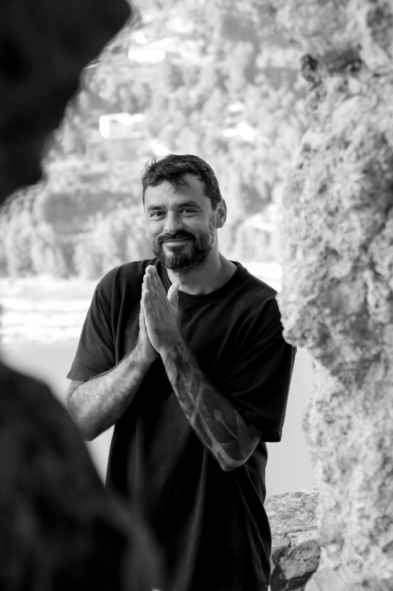
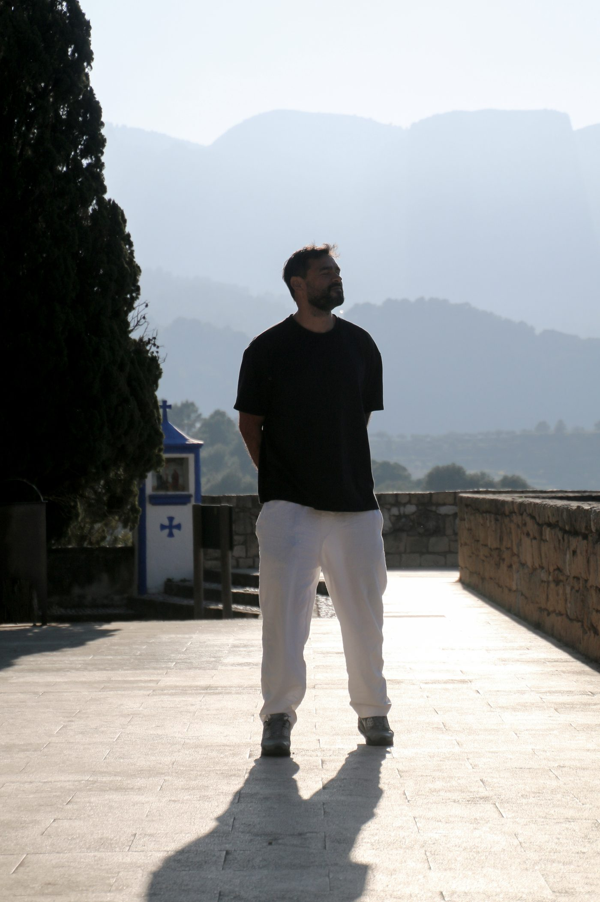
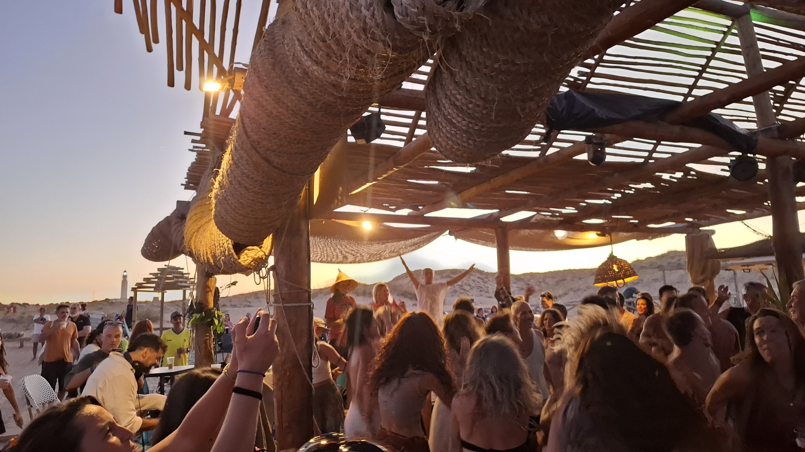
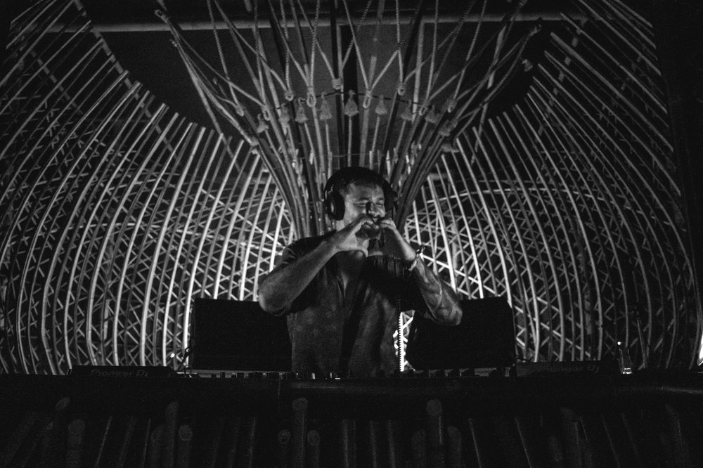
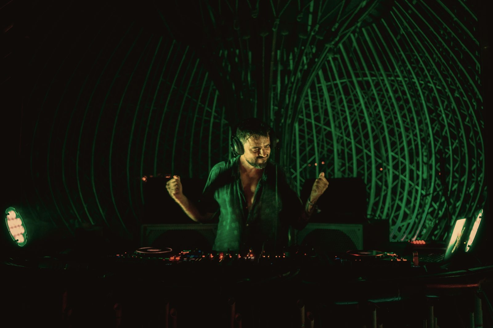
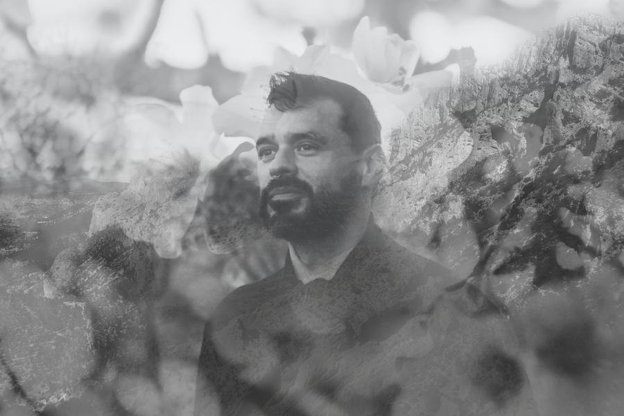

Music for the moments when people come home to themselves.
I picked up music with my first band at sixteen, and I've never put it down. Twenty-four years later, I'm still following the same thread: the search for depth — for the sound that makes people stop performing and start feeling.
I was born in Bogotá, grew up on the coasts of Costa Rica, and today I live in Spain. Fatherhood, heartbreak, inner work and a slow return to nature have all found their way into my music. You can hear it in the flutes, the charango, the guitar — and in the silences between them.
When I play, I'm not trying to impress anyone. I'm listening — to the room, to the bodies, to what the moment is asking for. Some nights that's a deep organic groove at sunset. Other times it's a single flute, a breath, and a circle of people letting go together.
If you're holding a space where people come to feel something real, I would love to be part of it.
Ancestral Andean sounds woven into organic house and downtempo. Music not as entertainment, but as a ceremony of presence — where rhythm becomes breath and silence holds as much power as sound.
Each format can stand alone or be woven together — a live opening, a dance journey, a ceremony to close.
Deep organic house and downtempo that builds slowly and honestly — a journey with gravity, never just volume. Adaptable to any space, from beach bars to festival stages.
Guitar, flutes and charango played live over electronic production in real time. Every performance is unrepeatable — breath, wood and strings meeting the pulse of the dancefloor.
Six years of holding free-movement spaces. A full emotional arc — music that invites people to let go, express, and land softly back in their bodies.
Music, movement and ritual around the cacao — an intimate, heart-centred gathering for retreats, wellness events and ceremonial spaces.
A signature men's-work ritual that blends movement, music and guided reflection around the four archetypes of mature masculinity.
Live Andean instruments and ambient soundscapes for yoga, breathwork and meditation — music that holds the practice without taking it over.
Use these for flyers, line-up posts and event pages. Please credit "Marcelo Bergés".
 Download ↓
Download ↓
Download ↓
Download ↓
Download ↓ Download ↓
Download ↓
Download ↓
Download ↓Need high-resolution files or a logo? Ask me — I'm happy to send them.
For your event page, line-up announcement or program.
Marcelo Bergés is a Colombian producer, multi-instrumentalist and facilitator based in Spain. Weaving Andean flutes, guitar and charango into organic house and downtempo, he creates music as a ceremony of presence. He has performed at Envision Festival and Cosmic Convergence and released on Buddha-Bar Beach, Organic House Records and more.
Marcelo Bergés is a Colombian producer, multi-instrumentalist and sound explorer with over 24 years of making music. It started at 16 with his first band — and never stopped. From trip-hop to progressive trance, from deep minimal to folktronica, downtempo and organic house, his sound has always followed one thread: the search for depth.
Today his work blends world music and organic electronic with the textures of Andean flutes, guitars, charangos, native percussion and ritual atmospheres. His music doesn't chase the dancefloor — it calls it, with gravity rather than noise.
Born in Bogotá, raised on the coasts of Costa Rica and now based in Spain, Marcelo has performed at Envision Festival (Costa Rica) and Cosmic Convergence (Guatemala), released on labels including Buddha-Bar Beach, Organic House Records, Shango Records, Desert Trax and Resueño, and has spent more than six years facilitating ecstatic dance and ritual spaces.
Tell me about your event — the date, the place and the people. I'll reply personally with availability, the right format and a technical rider tailored to your setup.
marcelo@marcelo-berges.com